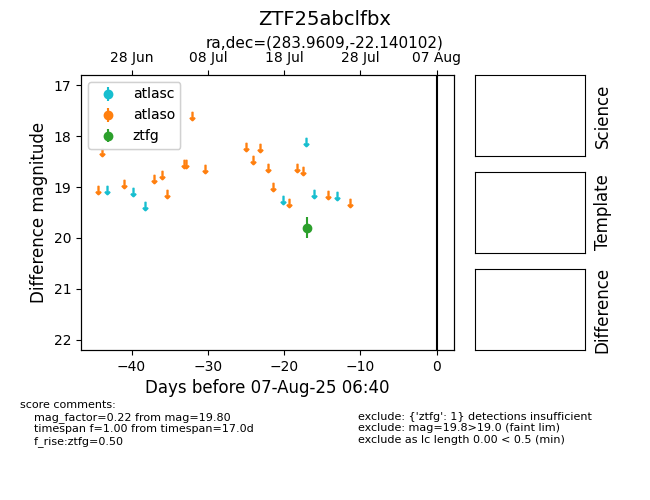

Target ZTF25abclfbx at 2025-08-07 07:30, see:
FINK: fink-portal.org/ZTF25abclfbx
Lasair: lasair-ztf.lsst.ac.uk/objects/ZTF25abclfbx
ALeRCE: alerce.online/object/ZTF25abclfbx
alt names
ZTF25abclfbx (ztf,fink)
coordinates:
equatorial (ra, dec) = (283.9609,-22.14010)
galactic (l, b) = (13.4679,-10.81824)
photometry
last ztfg=19.80
1 ztfg detections
